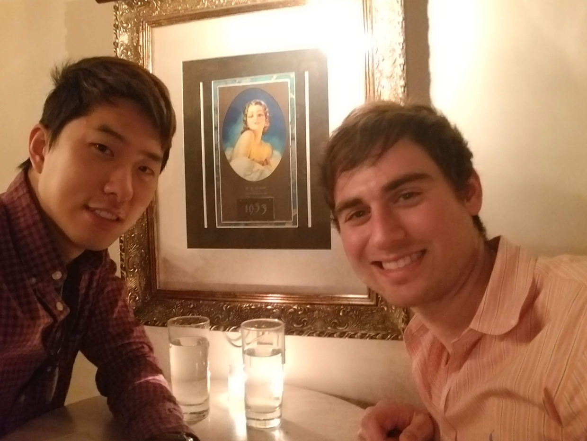

Once upon a time...
Mike and Woo Joong met one early November evening to check out the happening speakeasy Needle & Thread in the Capitol Hill neighborhood of Seattle, WA. Rumor has it they initially connected over their shared love of Nintendo video games and then hit it off from there. Woo was working as a software engineer (or "dev") and had to even bring his laptop on this first date as he was 'on call'! Mike was a second-year internal medicine resident but was in a momentary (and Woo would argue, deceiving) lull in his schedule that made it seem like he wasn't too busy all the time. A few specialty cocktail orders later and they both knew that this was no ordinary first date.
Their first date led to several more, and soon they were traveling all over together. When the COVID-19 pandemic hit, they both isolated at Woo's Capitol Hill condo, but despite the trying times, their relationship grew stronger. When Mike relocated to Baltimore, MD for his hematology fellowship, he knew that he needed to start his life with Woo Joong there. In a romantic and intimate courthouse wedding ceremony in August 2020, surrounded only by a couple of close friends, they exchanged vows and married.

Now, they are settled into a Baltimore high rise and recently added a fabulous feline to their family, a ginger tabby named Samus (or Sammy). As COVID has made wedding planning so unpredictable, and because of a love for all basic things in the fall season, they will now be having a relatively intimate wedding celebration this October 2022 at the Coradetti Glassblowing Studio in Charm City (aka Baltimore)!